阿克曼四轮小车运动控制
本章实现一辆阿克曼（Ackermann）结构四轮小车的运动控制：使用 xacro 完成整车建模，通过 ros_control 加载后轮速度控制器与前轮转向控制器，编写键盘遥控节点完成阿克曼转角与轮速解算，并为小车配置激光雷达、摄像头和 IMU，在仿真环境中验证控制效果与传感器数据。本章完整工程代码位于仓库 src/chap7 目录，包含 smartcar_description（模型与配置）和 smartcar_control（控制节点）两个功能包。
1. 环境配置与工程结构
1.1 运行环境
| 项目 | 版本 |
|---|---|
| 操作系统 | Ubuntu 20.04（虚拟机） |
| ROS 版本 | Noetic Ninjemys |
| 仿真环境 | Gazebo 11 |
| 可视化工具 | Rviz 1.14 |
| 工作空间 | ~/catkin_ws |
1.2 工程结构
两个功能包的目录结构如下：
src/chap7/
├── smartcar_description/ # 小车模型、控制器配置与启动文件
│ ├── config/
│ │ ├── smartcar_joint.yaml # 五个 ros_control 控制器配置
│ │ └── smartcar.rviz # Rviz 显示配置（含 LaserScan）
│ ├── launch/xacro/
│ │ └── smartcar_gazebo.launch # 总启动文件
│ └── urdf/xacro/
│ ├── smartcar.xacro # xacro 入口
│ ├── smartcar_body.xacro # 车体模型
│ └── smartcar_sim.xacro # 传感器与控制插件
└── smartcar_control/ # 运动控制节点
├── launch/
│ └── smartcar_gazebo_controller.launch
├── scripts/
│ └── front_wheel_jsp.py # 前轮关节状态补全节点
└── src/
└── smartcar_control_gazebo.cpp # 键盘遥控与阿克曼解算整车模型共包含 16 个 link、15 个 joint。其中 6 个为运动关节：
| 关节名称 | 类型 | 作用 | 控制接口 |
|---|---|---|---|
left_back_wheel_joint / right_back_wheel_joint |
continuous | 后轮驱动 | VelocityJointInterface |
left_bridge_to_bridge / right_bridge_to_bridge |
revolute | 前轮转向 | EffortJointInterface |
left_front_wheel_to_bridge / right_front_wheel_to_bridge |
continuous | 前轮自转 | 无（由补全节点发布） |
2. 小车模型构建
2.1 xacro 模型组织
车体模型使用 xacro 宏描述，入口文件 smartcar.xacro 通过 xacro:include 分别引入车体宏与仿真插件宏，再实例化两个宏：
<?xml version="1.0"?>
<robot name="smartcar" xmlns:xacro="http://www.ros.org/wiki/xacro">
<xacro:include filename="$(find smartcar_description)/urdf/xacro/smartcar_body.xacro"/>
<xacro:include filename="$(find smartcar_description)/urdf/xacro/smartcar_sim.xacro"/>
<xacro:smartcar_body/>
<xacro:smartcar_sim/>
</robot>smartcar_body.xacro 中定义了底盘、前后桥、四个车轮、上层支架以及激光雷达、摄像头、IMU 的安装结构，并以宏的形式封装了圆柱体惯性矩阵，例如：
<xacro:macro name="cylinder_inertial_matrix" params="m r h">
<inertial>
<mass value="${m}" />
<inertia
ixx="${m*(3*r*r+h*h)/12}" ixy="0" ixz="0"
iyy="${m*(3*r*r+h*h)/12}" iyz="0"
izz="${m*r*r/2}" />
</inertial>
</xacro:macro>2.2 xacro 旧语法修复
早期工程的 xacro 文件采用旧语法，在 Noetic 下无法正常解析，需要统一修复：
- 文件包含标签由
<include filename="..."/>改为<xacro:include filename="..."/>； - 所有宏调用必须带
xacro:前缀，例如 9 处圆柱体惯性矩阵调用由：
<cylinder_inertial_matrix m="0.1" r="0.025" h="0.05"/>改为：
<xacro:cylinder_inertial_matrix m="0.1" r="0.025" h="0.05"/>- 入口文件中的宏调用同样需要前缀，即
<xacro:smartcar_body/>与<xacro:smartcar_sim/>。
3. 编译与启动
3.1 创建工作空间并编译
将两个功能包放入工作空间的 src 目录后，在工作空间根目录执行编译：
mkdir -p ~/catkin_ws/src
cd ~/catkin_ws/src
# 将 smartcar_description、smartcar_control 置于 src/chap7 下
cd ~/catkin_ws
catkin_make
source devel/setup.bash编译成功后输出如下：
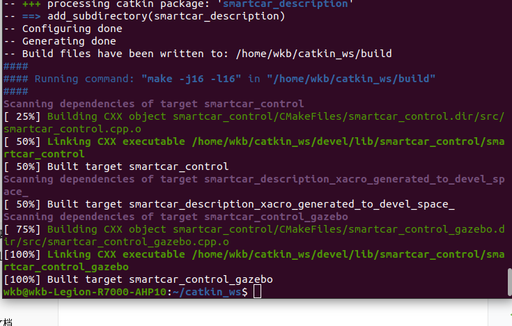
3.2 启动仿真环境
使用总启动文件启动 Gazebo、加载模型参数、加载控制器并将小车模型放入仿真环境：
roslaunch smartcar_description smartcar_gazebo.launch启动文件中首先包含 Gazebo 的空世界模板，然后加载 xacro 模型与控制器配置：
<include file="$(find gazebo_ros)/launch/empty_world.launch">
<arg name="paused" value="$(arg paused)"/>
<arg name="use_sim_time" value="$(arg use_sim_time)"/>
<arg name="gui" value="$(arg gui)"/>
</include>
<param name="robot_description"
command="$(find xacro)/xacro --inorder '$(find smartcar_description)/urdf/xacro/smartcar.xacro'" />
<rosparam file="$(find smartcar_description)/config/smartcar_joint.yaml" command="load"/>
<node name="robot_state_publisher" pkg="robot_state_publisher" type="robot_state_publisher"/>
<node name="urdf_spawner" pkg="gazebo_ros" type="spawn_model"
args="-urdf -model mrobot -param robot_description" output="screen"/>启动过程中终端输出 Gazebo ROS 接口插件加载完成的提示：
Finished loading Gazebo ROS API Plugin.此时 ROS 与 Gazebo 的通信已经打通，新开终端执行 rostopic list，可以看到 /gazebo/model_states、/gazebo/set_model_state 等 Gazebo 接口话题：
rostopic list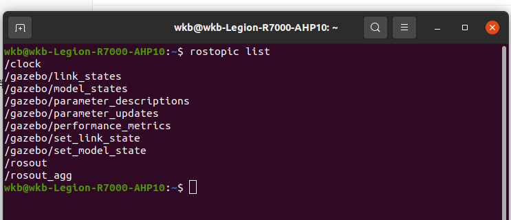
随后模型生成节点输出成功信息：
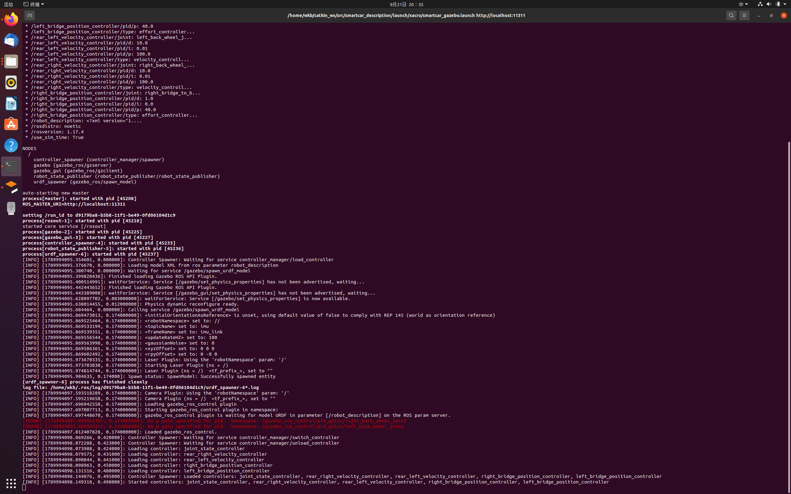
Gazebo 窗口中出现一辆阿克曼四轮小车，车头沿 x 轴正方向：
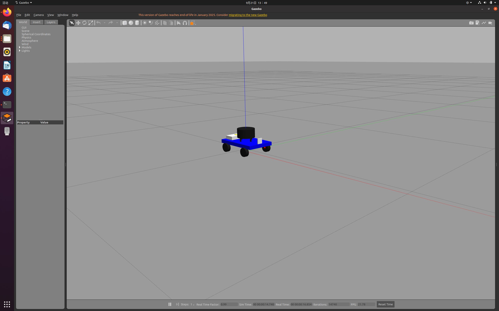
3.3 控制器加载
启动文件中的 controller_spawner 节点一次性加载五个控制器：
<node name="controller_spawner" pkg="controller_manager" type="spawner" output="screen"
args="joint_state_controller
rear_right_velocity_controller
rear_left_velocity_controller
right_bridge_position_controller
left_bridge_position_controller"/>终端依次输出五个控制器的 Loaded 与 Started 信息，即表示控制器全部就绪：
Loaded **joint_state_controller**
Started ...
Loaded **rear_right_velocity_controller**
Loaded **rear_left_velocity_controller**
Loaded **right_bridge_position_controller**
Loaded **left_bridge_position_controller**启动日志中可能出现两行红色的 No p gain specified for pid 提示，这是 Gazebo 中 PID 增益未单独配置时的常规提示，不影响控制器正常运行。
五个控制器全部 Started 后，对应的指令话题即已注册，可执行 rostopic list 查看到 /rear_left_velocity_controller/command、/rear_right_velocity_controller/command、/left_bridge_position_controller/command、/right_bridge_position_controller/command 等话题。
4. 前轮 TF 树补全
两个前轮的自转关节没有配置 transmission，Gazebo 不会发布这两个关节的状态。若直接使用官方 joint_state_publisher，它又会与 Gazebo 争抢四个主动关节的发布权，导致终端持续刷出 TF_REPEATED_DATA ignoring data with redundant timestamp for frame ... 警告，Rviz 中 RobotModel 的 Status 报错。
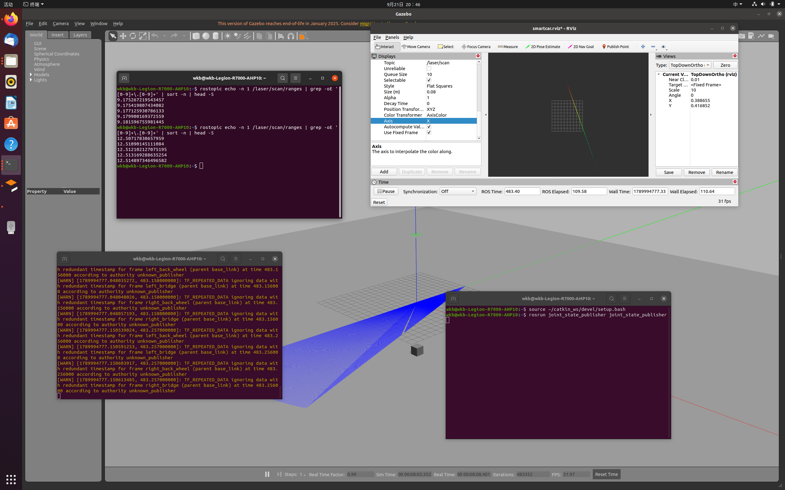
解决方法是编写一个专用节点 front_wheel_jsp.py，只发布两个前轮自转关节的零值，以 50Hz 补齐 TF 树：
#!/usr/bin/env python3
import rospy
from sensor_msgs.msg import JointState
rospy.init_node('front_wheel_jsp')
pub = rospy.Publisher('/joint_states', JointState, queue_size=10)
rate = rospy.Rate(50)
msg = JointState()
msg.name = ['right_front_wheel_to_bridge', 'left_front_wheel_to_bridge']
msg.position = [0.0, 0.0]
msg.velocity = [0.0, 0.0]
while not rospy.is_shutdown():
msg.header.stamp = rospy.Time.now()
pub.publish(msg)
rate.sleep()运行该节点：
rosrun smartcar_control front_wheel_jsp.py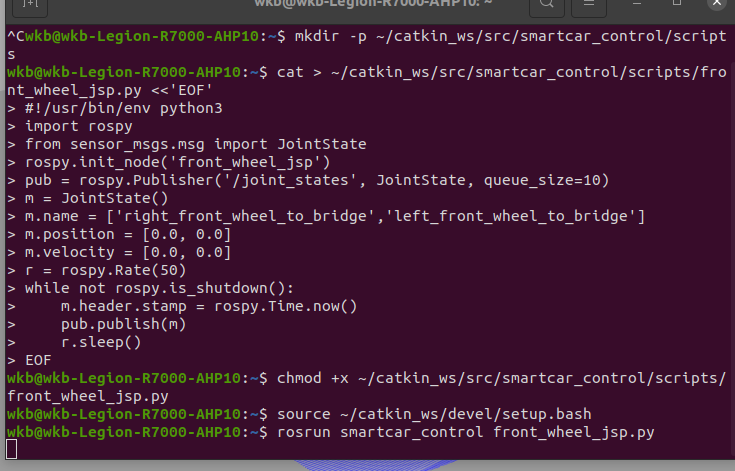
该节点运行后无多余输出属于正常现象，此时整车 TF 树完整。
5. Rviz 模型可视化
新开一个终端启动 Rviz，并加载随工程提供的配置文件：
rviz -d $(rospack find smartcar_description)/config/smartcar.rviz将 Fixed Frame 设置为 base_link，添加 RobotModel 并选择话题 /robot_description。TF 树完整后，Rviz 中显示完整的四轮小车模型，Global Status 与 RobotModel 均为绿色正常状态：
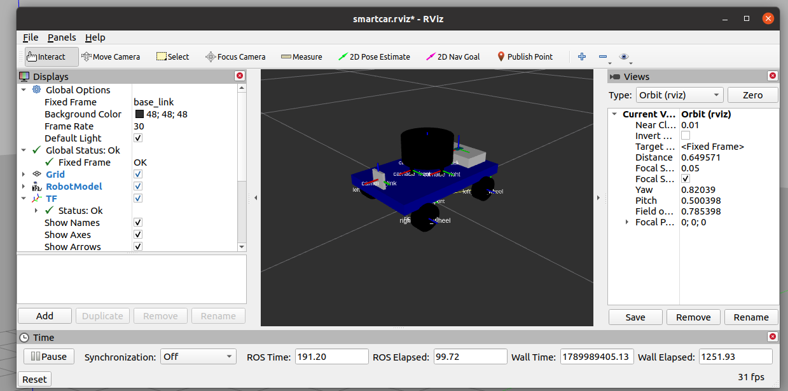
配置文件中已预置 LaserScan 显示项（Color Transformer 选择 AxisColor，Size 为 0.05 m，话题为 /laser/scan）。若 Rviz 中未出现该显示项，通常是功能包复制时旧目录未被完全覆盖，可点击 Add 手动添加 LaserScan 并指定话题。
6. 键盘遥控与阿克曼运动解算
6.1 控制器配置
五个控制器在 smartcar_joint.yaml 中配置。后轮采用速度控制器，两个转向桥采用位置控制器：
joint_state_controller:
type: "joint_state_controller/JointStateController"
publish_rate: 50
rear_right_velocity_controller:
type: "velocity_controllers/JointVelocityController"
joint: right_back_wheel_joint
pid: {p: 100.0, i: 0.01, d: 10.0}
rear_left_velocity_controller:
type: "velocity_controllers/JointVelocityController"
joint: left_back_wheel_joint
pid: {p: 100.0, i: 0.01, d: 10.0}
right_bridge_position_controller:
type: "effort_controllers/JointPositionController"
joint: right_bridge_to_bridge
pid: {p: 40.0, i: 0.0, d: 1.0}
left_bridge_position_controller:
type: "effort_controllers/JointPositionController"
joint: left_bridge_to_bridge
pid: {p: 40.0, i: 0.0, d: 1.0}6.2 阿克曼运动解算
阿克曼结构的特点是转向时内外前轮转角不同、内外侧车轮线速度不同，使所有车轮处于纯滚动状态。设转向桥输入角（虚拟中心转角）为 angle，车速为 speed，轮距（左右轮间距）为 width = 0.16 m，前后桥轴距为 wheelbase = 0.1885 m。
内外前轮转角分别为：
outer_angle = atan(wheelbase * tan(angle) / (wheelbase + 0.5 * width * tan(angle)))
inner_angle = atan(wheelbase * tan(angle) / (wheelbase - 0.5 * width * tan(angle)))内外侧后轮线速度分别为：
outside_speed = speed * (1 + 0.5 * width * tan(angle) / wheelbase)
inside_speed = speed * (1 - 0.5 * width * tan(angle) / wheelbase)直行时 angle = 0，内外转角均为 0，两侧轮速相等；转向时内轮转角大于外轮转角、内侧轮速小于外侧轮速，与真实阿克曼底盘一致。
6.3 键盘遥控节点
键盘遥控节点 smartcar_control_gazebo.cpp 读取键盘输入，按上述公式实时解算四个控制器的目标值。节点通过四个话题发布控制指令：
| 发布话题 | 消息类型 | 作用 |
|---|---|---|
/rear_right_velocity_controller/command |
std_msgs/Float64 | 右后轮目标转速 |
/rear_left_velocity_controller/command |
std_msgs/Float64 | 左后轮目标转速 |
/right_bridge_position_controller/command |
std_msgs/Float64 | 右前轮转向角 |
/left_bridge_position_controller/command |
std_msgs/Float64 | 左前轮转向角 |
启动键盘遥控节点：
roslaunch smartcar_control smartcar_gazebo_controller.launch节点启动后循环打印四个控制量以及阿克曼内外侧解算结果，待机状态下均为 0：
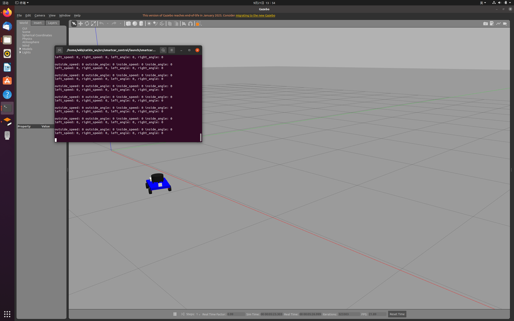
按键功能如下（终端窗口需获取焦点，并切换为英文输入法）：
| 按键 | 功能 |
|---|---|
w |
加速前进 |
s |
减速 / 后退 |
e |
前进时向左转 |
q |
前进时向右转 |
z |
后退时向右转 |
c |
后退时向左转 |
x |
转向回正 |
| 空格键 | 紧急停车 |
Ctrl + C |
退出节点 |
7. 激光雷达
7.1 雷达配置
激光雷达安装在车头顶部 laser_link，在 smartcar_sim.xacro 中以 ray 传感器配置，并加载 Gazebo 激光插件：
<sensor type="ray" name="head_hokuyo_sensor">
<visualize>true</visualize>
<ray>
<scan>
<horizontal>
<samples>720</samples>
<min_angle>-1.570796</min_angle>
<max_angle>1.570796</max_angle>
</horizontal>
</scan>
<range>
<min>0.10</min>
<max>30.0</max>
<resolution>0.01</resolution>
</range>
<noise>
<type>gaussian</type>
<stddev>0.01</stddev>
</noise>
</ray>
<plugin name="gazebo_ros_laser" filename="libgazebo_ros_laser.so">
<topicName>/laser/scan</topicName>
<frameName>laser_link</frameName>
</plugin>
</sensor>雷达每帧 720 束，扫描范围为车头前方 180°（±π/2），量程 0.10～30.0 m，更新频率 40 Hz，测量噪声标准差 0.01 m。
7.2 激光自扫故障排查
模型初次运行时，Rviz 中 LaserScan 以红色方块成片叠加在车体周围，说明雷达扫描到了自身结构：
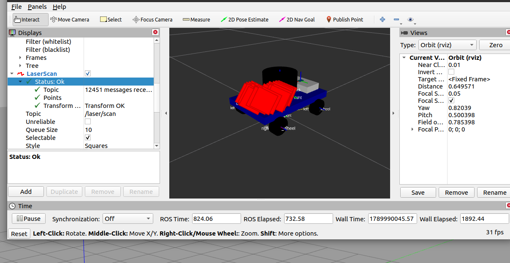
查看数据，每帧最近回波均为雷达量程下限 0.1 m：
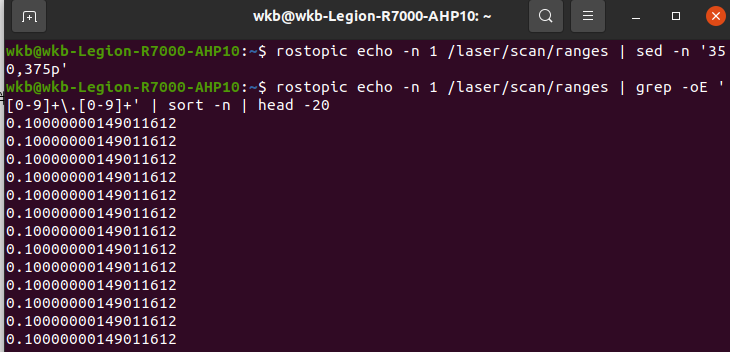
进一步统计每帧含数值的回波数量，共 655 条有数值回波，其余 65 束为无回波的 inf；滚动输出还可见大量回波为量程下限 0.1 m，说明射线成片命中了自身结构：
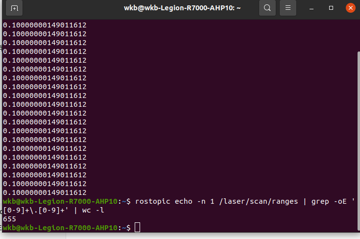
排查发现 laser_link 自身配置了碰撞体，雷达射线与该碰撞体相交。删除 laser_link 中的 <collision> 块（保留 visual 与惯性参数）：
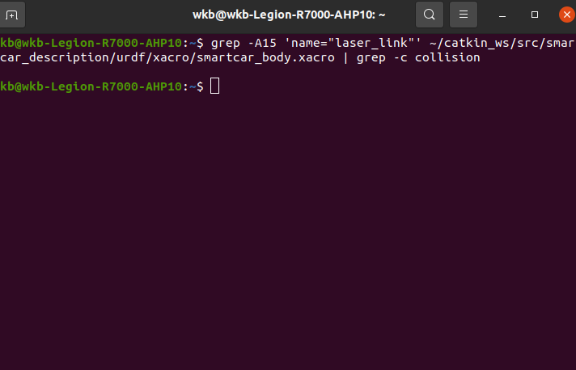
修改后重新加载参数统计，整车 collision 数量为 14，laser_link 块中仅保留 visual：
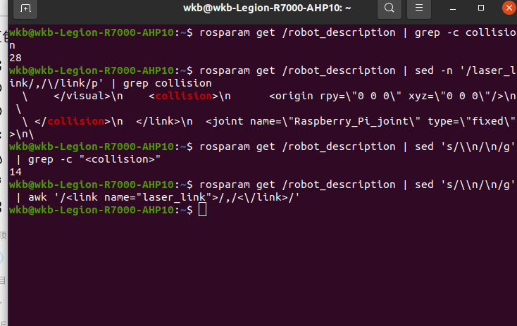
同时将传感器的 <visualize> 由 false 改为 true（模型中共有 2 处），便于在 Gazebo 中观察射线。修改 xacro 后必须彻底关闭 Gazebo 再重新启动：
killall gzserver gzclient
roslaunch smartcar_description smartcar_gazebo.launch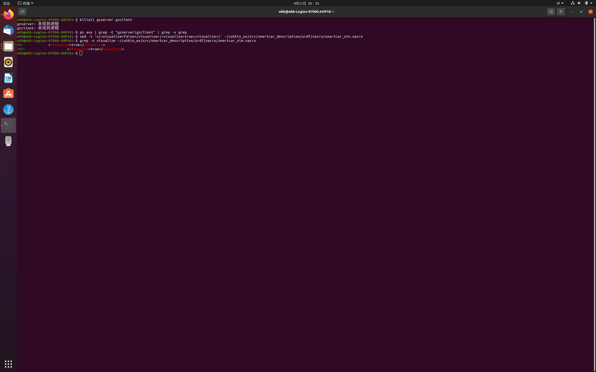
7.3 点云与频率验证
重启后 Gazebo 中射线呈前向扇形正常展开，不再扫描到车体，空旷环境中最近回波距离明显增大：
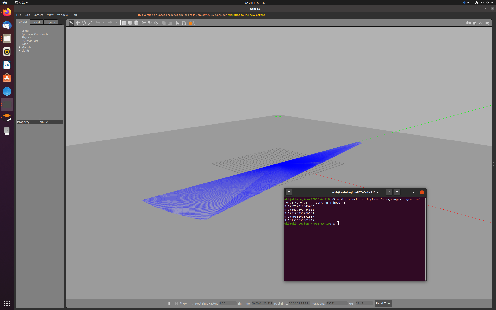
查看激光话题发布频率，稳定在 40 Hz 左右（实测约 39.8 Hz）：
rostopic hz /laser/scan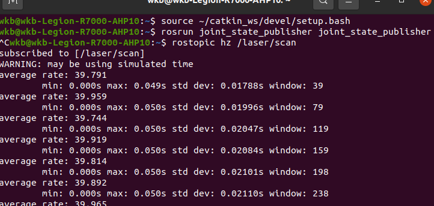
8. 摄像头与 IMU
8.1 摄像头
摄像头安装在车头 camera_link，分辨率 800×800，更新频率 30 Hz，发布 /camera/image_raw 与 /camera/camera_info 话题。使用 rqt 图像查看工具观察画面：
rqt_image_view /camera/image_raw将方块放在车头前方时，画面中可以清晰看到障碍物：
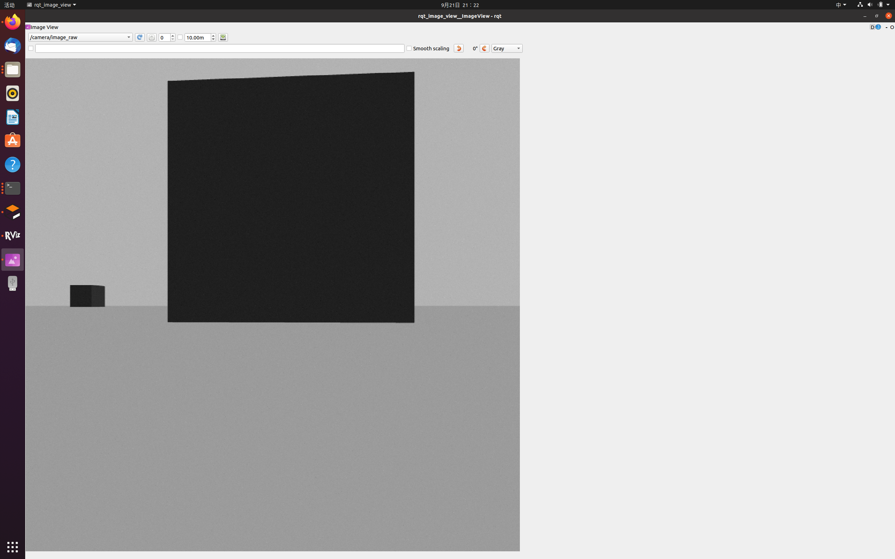
8.2 IMU
IMU 安装在车体上层 imu_link，更新频率 100 Hz，发布 /imu 话题。查看发布频率，实测约 98 Hz：
rostopic hz /imu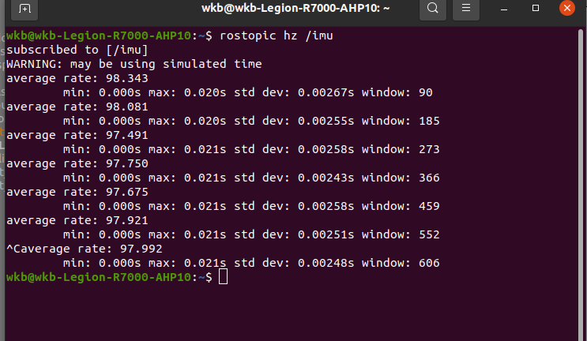
静止状态下查看 IMU 数据，角速度各分量接近 0，线加速度以 z 轴重力分量为主（约 9.8 m/s²），姿态四元数接近单位四元数：
rostopic echo /imu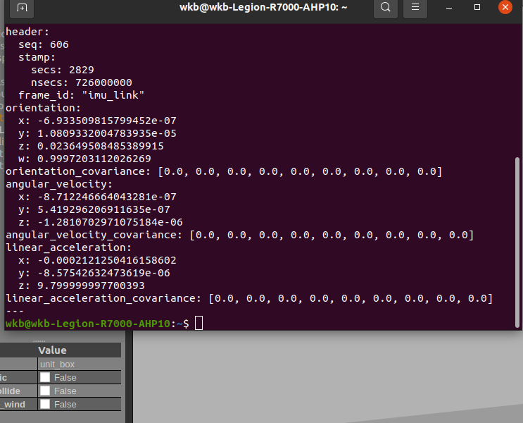
9. 障碍物检测验证
为验证激光雷达对障碍物的检测效果，在 Gazebo 中放置标准方块并观察射线与点云。
9.1 放置方块
点击 Gazebo 顶部工具栏的 Box 图标，在地面上单击即可放置一个边长 1 m 的方块。在左侧 World 选项卡中展开 Models，选中方块后展开 Pose，按实际位置填写 x、y、z：方块边长 1 m、贴地放置时 z 应填 0.5。每个数值输入后按回车确认：
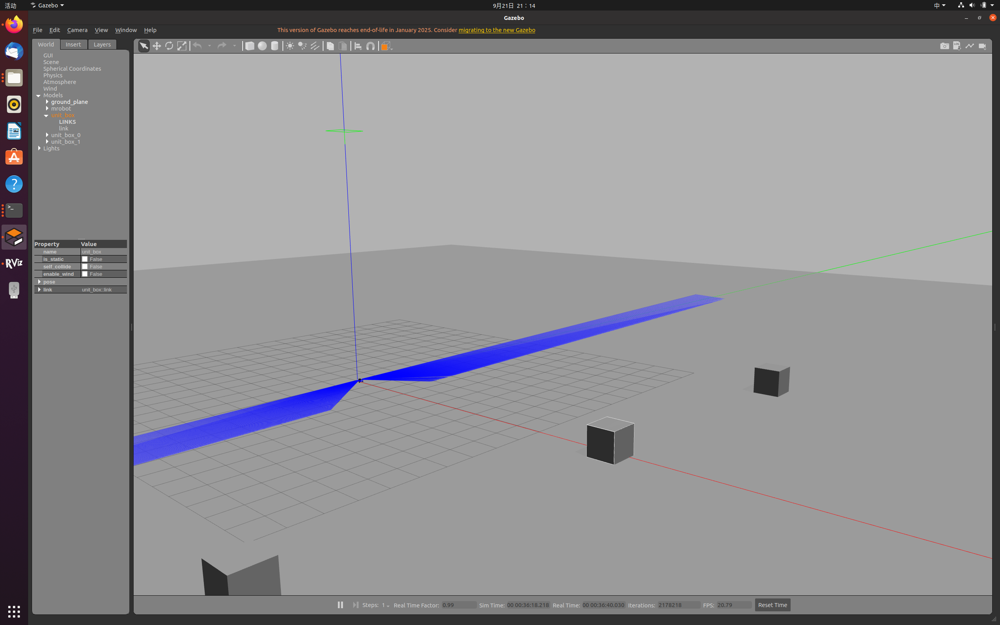
将方块放到车头正前方约 2 m 处，即 x=2、y=0、z=0.5：
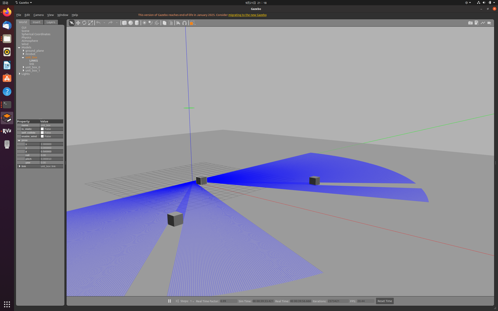
9.2 观察检测结果
Gazebo 中激光射线在方块后方形成明显的楔形阴影区域：
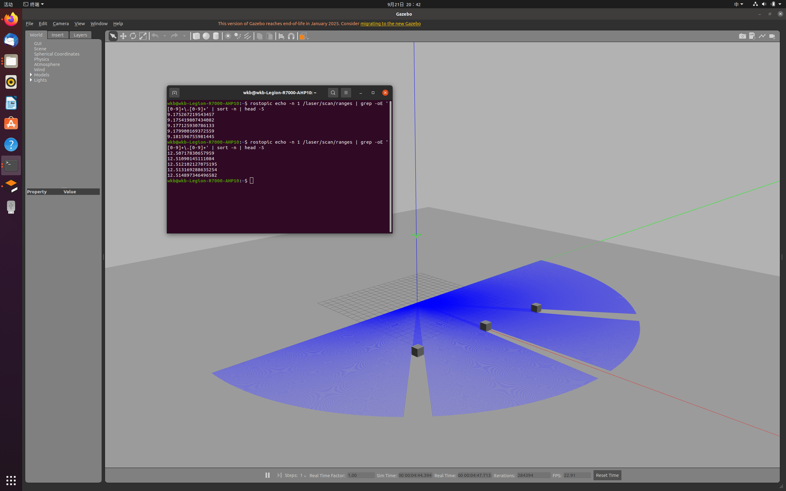
在 Rviz 中将视图切换为 TopDownOrtho 俯视模式，点云与场景中的方块一一对应：车头正前方与侧前方方块的相邻两面在点云中呈现黄色的 L 形与 Γ（反 L）形轮廓，远处方块的侧面呈现蓝色与紫色竖直点线：
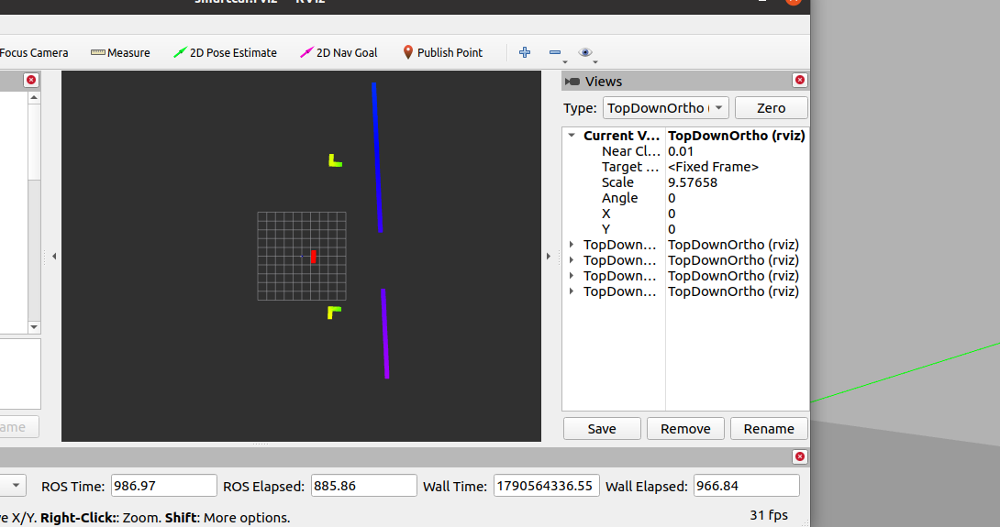
点云轮廓与真实障碍物的位置、形状完全吻合，表明小车的运动控制与激光雷达数据链路均工作正常。
10. 常见问题
Q1：启动后 Gazebo 中看不到射线或传感器没有数据？
确认是通过 roslaunch 启动，而不是先手动运行 gazebo。手动启动的无插件实例会被 Gazebo 单例机制复用，导致 ROS 插件无法注册。先执行 killall gzserver gzclient 关闭所有实例，再使用启动文件。
Q2：修改 xacro 文件后效果没有变化？
Gazebo 不会热加载模型，必须先 killall gzserver gzclient，再重新执行 roslaunch。
Q3：终端持续刷 TF_REPEATED_DATA 警告？
官方 joint_state_publisher 与 Gazebo 同时发布主动关节状态。关闭该节点，改用工程提供的 front_wheel_jsp.py 只补全两个前轮关节。
Q4：Insert 选项卡中的在线模型库无法加载？
在线模型库在国内网络环境下经常无法访问，属于网络问题。本章使用 Gazebo 内置几何体（Box 等）即可完成验证，不影响实验。
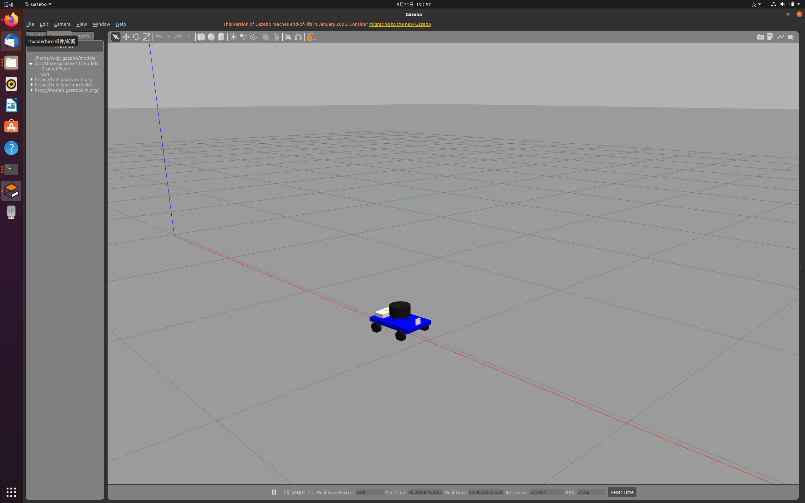
Q5：Rviz 中 LaserScan 显示项没有自动出现？
功能包复制到已存在的同名目录时可能发生目录嵌套，导致加载的仍是旧配置。删除旧目录后重新复制，或在 Rviz 中手动 Add → LaserScan，话题选择 /laser/scan。
Q6：键盘节点按键后小车没有反应？
检查运行键盘节点的终端窗口是否获取鼠标焦点，并确认系统处于英文输入法状态；待机时终端持续打印全 0 数据属于正常现象。
本章完成了阿克曼四轮小车从 xacro 建模、xacro 旧语法修复、ros_control 控制器配置、阿克曼运动解算与键盘遥控，到激光雷达自扫故障排查和三传感器数据验证的完整流程，全部实验结果均在 Ubuntu 20.04 + ROS Noetic 环境下复现通过，工程代码位于仓库 src/chap7 目录。